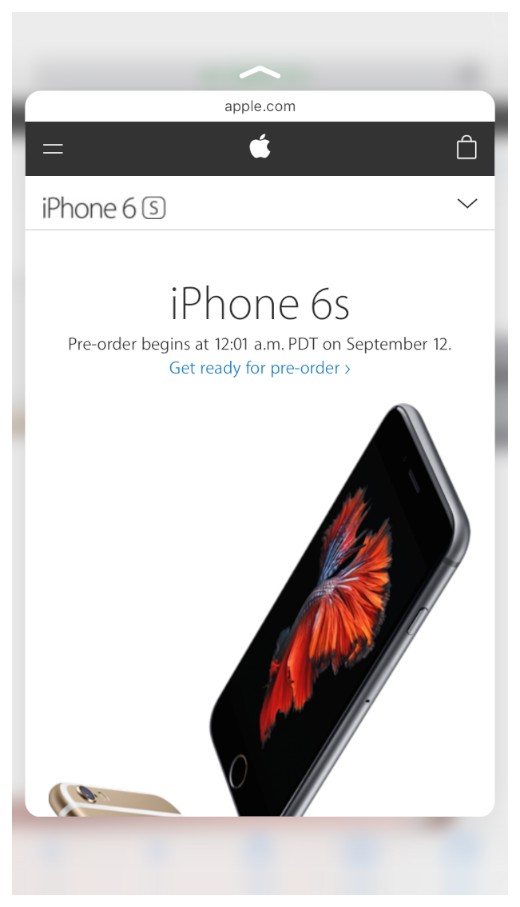
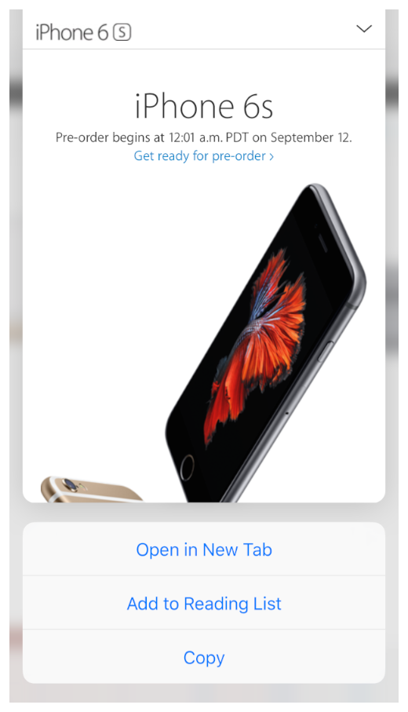
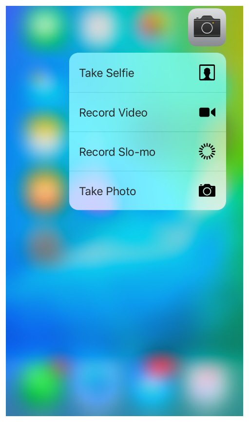
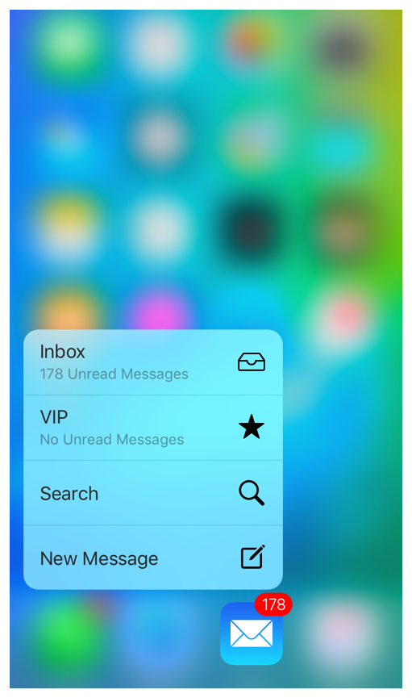
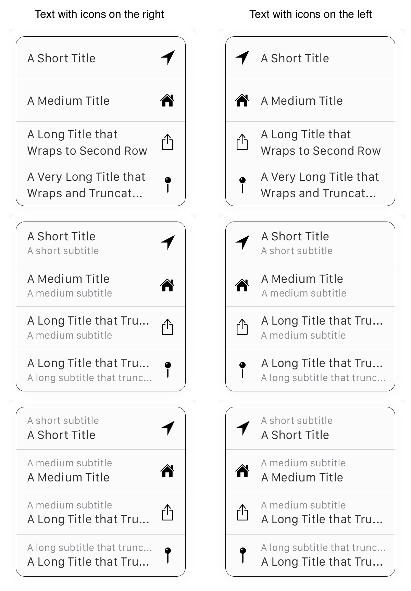

3D Touch
3D Touch gives iOS 9 users an additional interaction dimension. On supported devices, people can quickly choose app-specific actions from the Home screen by pressing on the app icon. Within an app, people can use various pressures to get a preview of an item, open the item in a separate view, and access related actions. (To learn more about adding support for 3D Touch in your code, see Adopting 3D Touch on iPhone.)
Peek and Pop
A peek lets users preview an item and perform related actions without leaving their current context. An item indicates that it supports peek by displaying a small rectangular view (sometimes called a hint) in response to a light press.
A peek preview in Safari

Quick actions in a Safari peek

A peek:
Appears while a user presses on an item that supports peek and disappears when the user’s finger lifts
Opens a detailed view of the item—called a pop—when users press a little deeper on the peek view
Can provide quick actions related to the item when users swipe up within the peek view
When users press lightly on the screen, an item that supports peek hints that further interaction is available by displaying a rectangular view that you provide. The view should be large enough so that the user’s finger doesn’t obscure the content and detailed enough so that the user can decide whether to press a little deeper to view the peek.
Use a peek to provide a live, content-rich preview of an item. It’s best when a peek gives users enough information about an item to augment their current task. For example, users can use peek to preview the webpage of a URL in a message before they decide to open the webpage in Safari or share the link with their friends. In a table view, peek shows users the detail view for a row item.
Provide a pop for every peek. Even though a peek should give users most of the information they need, you should always let users transition to the pop if they decide to switch away from their current task and focus on the item. The pop should be the same view that users get when they tap the item.
Don’t enable both peek and the Edit menu for the same item. It can be confusing when both features are enabled for one item. (To learn more about the Edit menu, see Edit Menu.)
Within a peek, avoid displaying elements that look like buttons. If users lift their finger to tap an element that looks like a button, the peek disappears.
Provide peek quick actions, if appropriate. Within a peek, users can swipe up to reveal actions that are related to the item. For example, peek quick actions in Mail include Reply All, Forward, and Move Message. Not every peek needs quick actions, but if you already provide custom touch-and-hold actions for an item, it’s good practice to provide the same actions within the peek that replaces touch and hold for that item. (Note that peek quick actions in a peek for a web view are supplied automatically.)
Don’t use peek as the only way to enable item-specific actions. Not every device supports peek and pop and some users may choose to turn off 3D Touch, so it’s essential to find other ways to make peek functionality available in your app. When your app runs on older devices, it can make sense to mirror a peek’s quick actions in a view that users get when they touch and hold an item.
Home Screen Quick Actions
Home screen quick actions give users a convenient way to perform useful, app-specific actions from the Home screen.
Camera Home screen quick actions

Mail Home screen quick actions

A Home screen quick action:
Appears when users press a little more deeply than for touch and hold on an app icon on the Home screen
Displays a short title, an icon, and optional subtitle that you supply
Does not support other custom content
Can display updated information when your app updates
Use a Home screen quick action to enable a compelling, high-value task. For example, Maps lets users search near their current location or get directions home without first opening the Maps app. Every app should enable at least one useful task in a Home screen quick action; you can provide a total of four quick actions.
Avoid using Home screen quick actions to ease navigation through your app. If it’s difficult or time-consuming for users to visit important areas in your app, first fix the navigation in your app so that all users benefit. Next, focus on providing Home screen quick actions that deep-link into your app and enable useful, creative tasks.
Avoid changing Home screen quick actions in ways that are difficult for users to predict. Using dynamic quick actions is a great way to keep actions relevant. For example, it may make sense to update quick actions based on the user’s current location or recent activities in your app, time of day, or changes in the user’s settings. However, actions shouldn’t change in ways that are unpredictable or confusing. Be sure to base changes to your app’s quick actions on events or context changes that the user understands.
Don’t use a Home screen quick action as a way to notify users. iOS users expect to receive notifications from apps in other ways (to learn about these ways, see Notifications).
Provide a succinct title (and optional subtitle) and a template icon for each Home screen quick action. The title should instantly communicate the results of the action; for example, “Directions Home,” “Create New Contact,” and “New Message.” You can also provide an optional subtitle to give users more context. For example, Mail uses a subtitle to tell users if there are any unread messages in the VIP Home screen quick action. Don’t include your app name or any extraneous information in the title and subtitle, and be sure to take localization into account as you write the text.
It’s important to keep the title as short as possible to avoid truncation and to help users quickly understand the action. If you supply a subtitle, the system truncates a title that’s too long to fit on one line; if you don’t include a subtitle, the system wraps a long title onto the second line.
Don't use an emoji in place of a template icon. Emojis don't align properly when the text is right-aligned. Also, emojis are full color, whereas template icons should be monochromatic. You can choose from among the many system-provided template icons or you can create a custom template icon. For detailed guidance on icon sizes, padding, and positioning, download Home Screen Quick Action Icon Template from https://developer.apple.com/design/downloads/Quick-Action-Guides.zip. To learn more about designing a template icon, see Template Icons.
The system automatically displays the icons on the left or right side of the list of quick actions, depending on the location of your app icon on the user’s Home screen. (Regardless of the position of icons in the list, the text is always left-aligned in left-to-right languages.) Here are several examples of Home screen quick actions that illustrate the various ways they can look.

Case Study: From Desktop to iOS
Copyright © 2016 Apple Inc. All rights reserved. Terms of Use | Privacy Policy | Updated: 2016-03-21